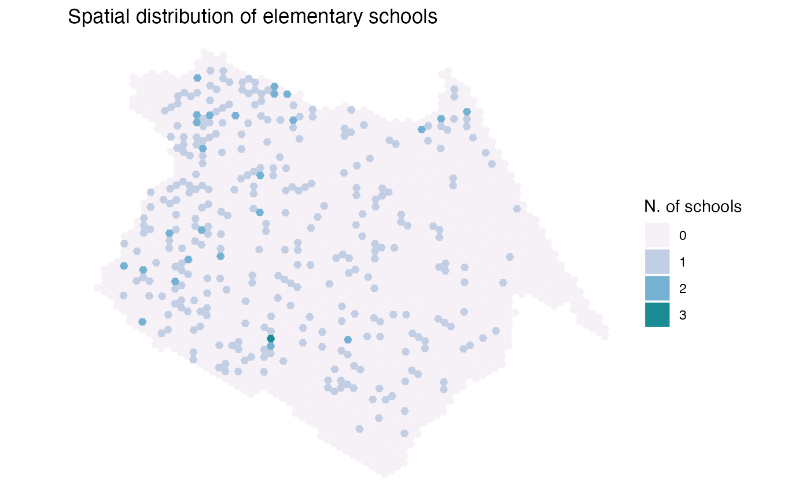
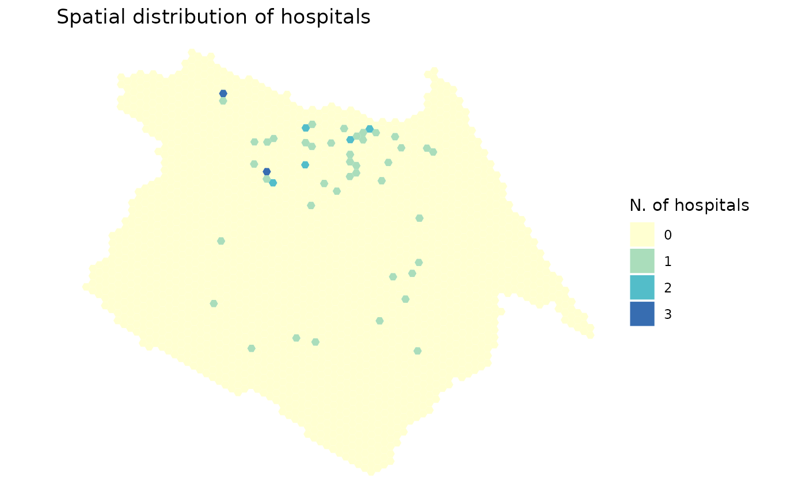
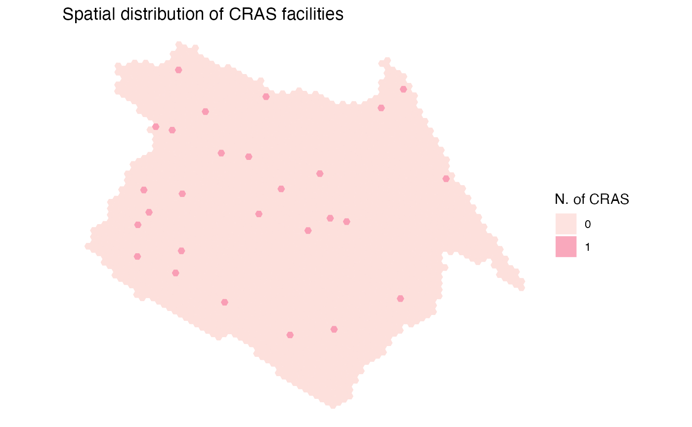

Spatial distribution of activities and urban services
Download land use data
# download aop data
df <- read_landuse(city='Fortaleza',
year=2019,
geometry = T,
showProgress = F)Map jobs Spatial distribution of jobs
ggplot() +
geom_sf(data=df, aes(fill=T001), color=NA, alpha=.9) +
scale_fill_distiller(palette = "YlOrRd", direction = 1) +
labs(title='Spatial distribution of jobs', fill="N. of jobs") +
theme_void()
Map Schools Spatial distribution of elementary schools
ggplot() +
geom_sf(data=df, aes(fill=factor(E003)), color=NA, alpha=.9) +
scale_fill_brewer(palette = "PuBuGn", direction = 1) +
labs(title='Spatial distribution of elementary schools', fill="N. of schools") +
theme_void()
Map Hospitals Spatial distribution of high-complexity health care facilities
ggplot() +
geom_sf(data=df, aes(fill=factor(S004)), color=NA, alpha=.9) +
scale_fill_brewer(palette = "YlGnBu", direction = 1)+
labs(title='Spatial distribution of hospitals', fill="N. of hospitals") +
theme_void()
Map Centers for social assistance (CRAS) Spatial distribution of CRAS facilities
ggplot() +
geom_sf(data=df, aes(fill=factor(C001)), color=NA, alpha=.9) +
scale_fill_brewer(palette = "RdPu", direction = 1)+
labs(title='Spatial distribution of CRAS facilities', fill="N. of CRAS") +
theme_void()